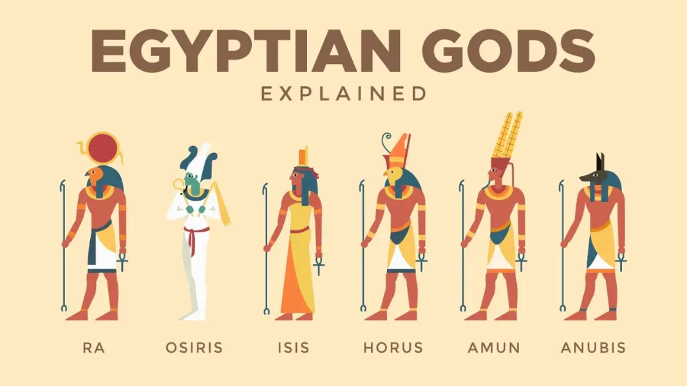

Egyptian Mythology (Simplified)
Main Beliefs
- Egyptians believed in many gods and goddesses (polytheism).
- Each god controlled parts of nature or life — like the sun, the Nile, or death.
- Gods could appear as humans, animals, or both.
- Living a good life meant eternal peace in the afterlife.
- The Pharaoh was seen as a living god.
Major Gods and Goddesses
- Ra – Sun god and creator of life.
- Osiris – God of the afterlife and resurrection.
- Isis – Goddess of magic and motherhood.
- Horus – Sky god; symbol of kingship and protection.
- Anubis – God of mummification and funerals.
- Thoth – God of wisdom and writing.
- Set – God of chaos and storms.
- Ma’at – Goddess of truth and balance.
The Osiris and Isis Story

- Osiris ruled Egypt wisely.
- His brother Set became jealous and killed him.
- Isis reassembled and revived Osiris with magic.
- Their son Horus fought Set and became king.
- Osiris became god of the underworld.
The Afterlife
- Souls were judged after death in the Weighing of the Heart.
- A pure heart (light as a feather) meant eternal life.
- A heavy heart (full of evil) was eaten by Ammit.
Symbols and Sacred Beliefs
- Ankh – Symbol of life.
- Eye of Horus – Protection and healing.
- Scarab Beetle – Rebirth and the rising sun.
- Cats – Sacred to Bastet, goddess of home and fertility.
Back